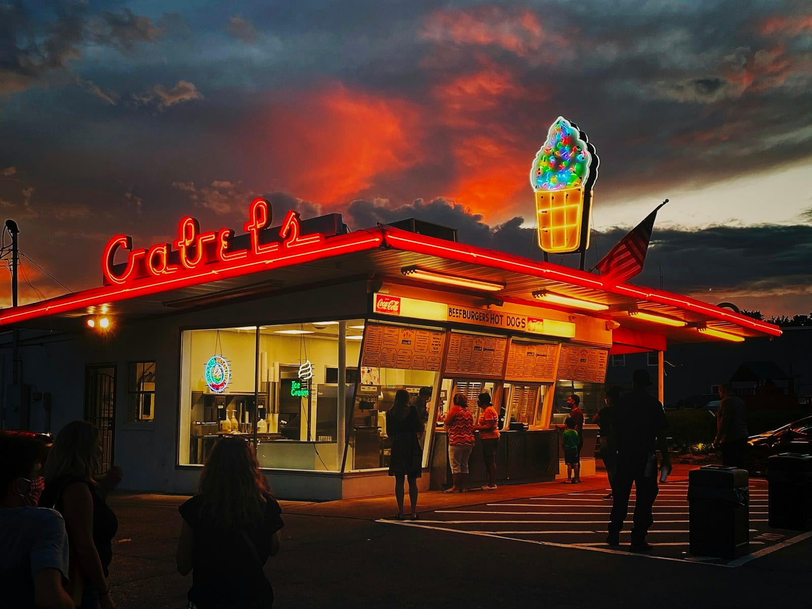

MUSIC
What is Americana music?
Here's what Americana music is and how it differs from country, along with the instruments, the artists, and which size of Americana band would suit a reception, a retreat or a wedding in Colorado.

- Americana is an umbrella name for American roots music, the songs that draw on country, folk, bluegrass, blues and rock at once.
- Country usually means the sound of country radio. Americana leans on older country records and on folk, and bluegrass is the strictest member of the family, with a traditional lineup and no drums.
- The artists run from The Band and John Prine to Jason Isbell and Brandi Carlile, and Colorado has its own in Nathaniel Rateliff, Gregory Alan Isakov and the Lumineers.
- For an event, the trio suits a reception or a dinner where people want to talk, and the quartet is the dance band.
If you know John Prine’s Angel from Montgomery, you already know the sound of Americana. Americana is an umbrella name for American roots music, the songs that come out of country, folk, bluegrass, blues and rock and borrow from several of them at once. It’s usually an acoustic guitar and a singer telling a story, with a fiddle or a mandolin taking the melody between the verses and an upright bass underneath.
It’s a recognized genre. The Americana Music Association, its trade organization, was founded in 1999 and is based in Nashville, and the Grammy Awards have had a Best Americana Album category since 2010.
Is Americana the same as country? #
They’re close relatives, and plenty of artists get filed under both. When most people say country, they mean the music on country radio, played by a full band with electric guitars and drums and recorded with a polished studio sound. Americana takes more from older country records, with their fiddle, pedal steel guitar and story songs, and mixes in folk, blues and rock. It’s usually more acoustic, and the lyrics get more of the attention.
Folk and Americana overlap the most. Folk is the tradition of songs passed from singer to singer, and of new songs written in the same style, usually sung by one voice over an acoustic guitar. A quiet Americana record can be hard to tell from a folk record.
Bluegrass is the easiest of the three to pin down. It takes its name from Bill Monroe’s band, the Blue Grass Boys. The traditional lineup is banjo, mandolin, fiddle, acoustic guitar and upright bass, with no drums. The tempos are fast, the solos pass from one player to the next, and the harmony singing is high and close.
If you’re choosing between a bluegrass band and an Americana band for an event, the difference you’ll hear is how many styles the band can play. A bluegrass band keeps the bluegrass sound all night, even when it plays a rock song. An Americana band can move from a bluegrass standard to a folk song to a rock song in one set, and play each one in its own style.
What instruments are in an Americana band? #
Acoustic guitar is at the center of almost every Americana band, and the singer usually plays it. These are the other instruments you’ll hear:
- Fiddle. This is the same instrument as a violin. The name changes with the music, and in country, bluegrass and Americana it’s called a fiddle.
- Mandolin. It’s a small, bright instrument with eight strings in four pairs. In bluegrass it plays fast melodies and a short, sharp chord on the offbeat that keeps the time.
- Upright bass. This is the tall bass played standing up, also called a double bass, and it’s plucked with the fingers for a round, woody sound.
- Banjo. The five-string banjo’s fast, rolling picking is the sound most people hear as bluegrass.
- Pedal steel and dobro. These are two kinds of slide guitar. The pedal steel sits on legs and is played with a steel bar, with pedals that bend the notes, and the dobro is a resonator guitar (an acoustic guitar with a metal cone inside) played flat on the lap. Both make the long, sliding notes you hear on a classic country ballad.
- Harmonica is often played by the singer, on a holder worn around the neck.
- Drums and electric guitar push the sound toward rock.
The Americana band we book is a singer on acoustic guitar, a musician on fiddle or mandolin, and an upright bass player, and adding drums makes it a quartet.
Which artists and songs are Americana? #
People use the name for the older records the genre grew out of as well as for the artists most associated with it now. Here’s a short list with one song from each:
- The Band, The Weight
- The Grateful Dead, Friend of the Devil
- Emmylou Harris, Boulder to Birmingham
- Lucinda Williams, Car Wheels on a Gravel Road
- Jason Isbell, Cover Me Up
- Brandi Carlile, The Story
- The Avett Brothers, I and Love and You
Colorado has its own Americana artists. Nathaniel Rateliff and the Night Sweats, the band behind S.O.B., are from Denver. Gregory Alan Isakov, who wrote Big Black Car, lives on a farm in Boulder County. The Lumineers moved to Denver in 2009 and were based there when Ho Hey made them famous.
What does an Americana band play at an event? #
An Americana band at an event mostly plays covers, and ours picks from two groups of songs. One is the music people expect on a mountain evening, which means the Grateful Dead, Tom Petty, Neil Young, Bob Dylan, The Band, the Allman Brothers, John Prine and the Avett Brothers. The other is Colorado music from Rateliff, Isakov and the Lumineers. The bluegrass standards are on the song list too, led by the fiddle and the mandolin.
For a welcome reception, the band may lean toward the acoustic side of the song list, and for a ranch dance, they can bring out more Petty and the Dead. If there’s a song you want that isn’t on it, just let us know when you book and the band can usually learn it. We book the band across Denver and the mountain towns, and most of its dates are on lawns, ranches and resort decks.
Trio or quartet: which Americana band to book #
- The trio suits a welcome reception on your group’s first night in Colorado, a dinner where people want to talk, or the cocktail hour at a mountain wedding. It can play softly enough for your guests to talk, and outdoors on a lawn, the people in back can still hear the fiddle.
- The quartet works well for a ranch dinner, a summer picnic that runs into the evening, the last night of a retreat, or a ranch wedding reception. It’s a dance band, and it can play as loud as your venue allows.
You can learn more about both sizes on our Americana band page. If you’re planning a retreat, check out our corporate retreats page for the resort towns and more entertainment ideas, along with our post on corporate retreat evening ideas in Vail. For a general view of what live music costs across Colorado, see the live music cost guide.